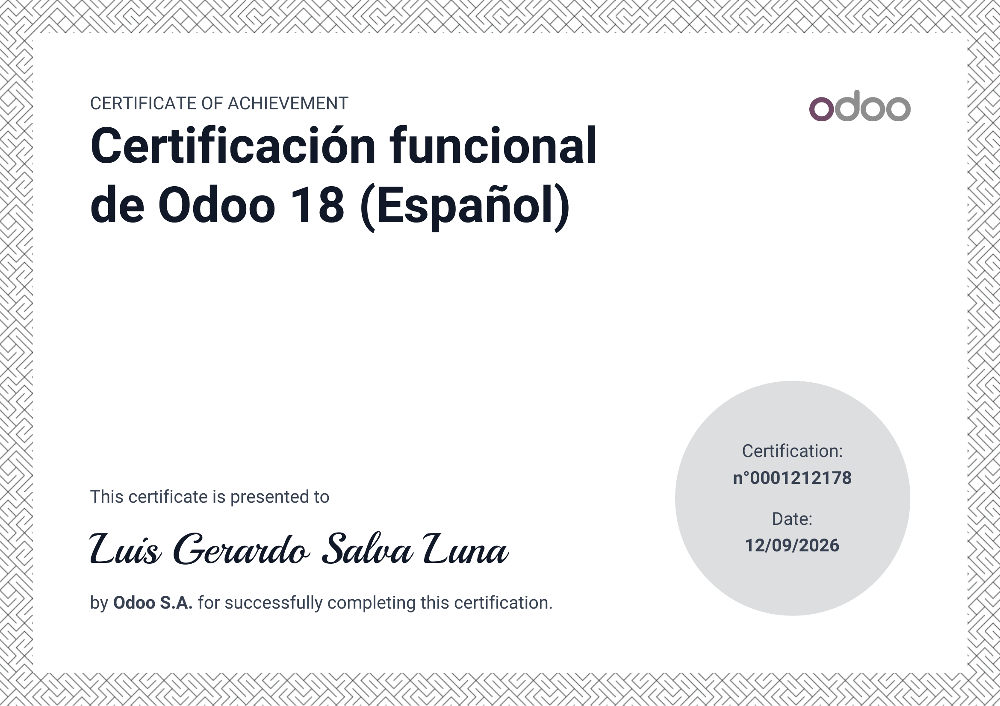

Credencial profesional
Certificación funcional de Odoo 18
Luis Gerardo Salva Luna
Certificación otorgada por Odoo S.A. tras completar satisfactoriamente la Certificación Funcional de Odoo 18 en español.
✓
Certificación obtenida
Emitido por
Odoo S.A.
Fecha de obtención
12 de septiembre de 2026
Certificación
Odoo 18 Functional
N.º de certificado
0001212178

Certificado original emitido por Odoo S.A.